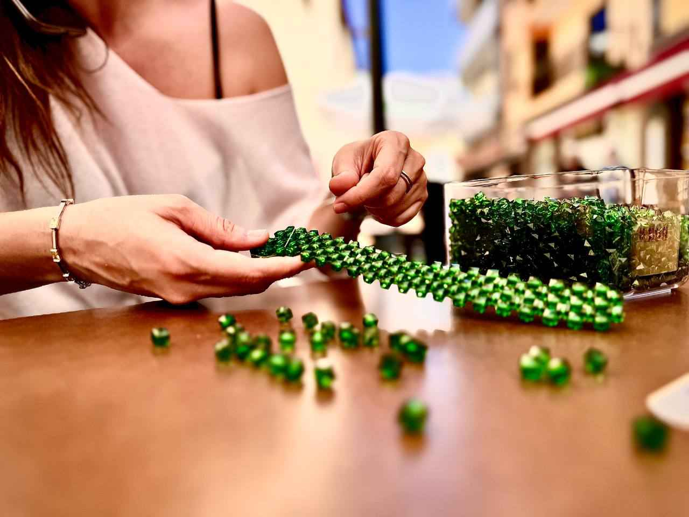

Publicado el 18 de noviembre de 2024
¿Quienes somos?
En NacaRam creemos en los cambios, en los sueños y en el poder de la creatividad. Nuestra historia nace de la pasión por la moda y los complementos, y de la voluntad de crear algo único y especial, hecho a mano con todo el cariño y dedicación.
La inspiración detrás de NacaRam surge de una experiencia personal. Durante años he trabajado en el sector de la moda, rodeada de accesorios y tendencias que siempre me fascinaron. Aunque en su momento estudié Ingeniería Informática, la vida me llevó por otros caminos y, tras un tiempo de reflexión, decidí retomar mis estudios y a la vez apostar por mi verdadero sueño: diseñar bolsos de perlas únicos. Así, hace aproximadamente un año, nació NacaRam.
Todos nuestros bolsos están hechos artesanalmente en Tenerife, utilizando perlas acrílicas y de cristal cuidadosamente seleccionadas. Cada pieza cuenta una historia, reflejando la esencia de la isla y el amor por el detalle. Lo que comenzó como un hobby se ha transformado en una verdadera apuesta por la calidad y la originalidad.
Queremos que, cuando elijas un bolso de NacaRam, sientas que llevas contigo no solo un accesorio, sino también una parte de nuestra historia y el trabajo dedicado detrás de cada cuenta. Esperamos que nuestras creaciones te inspiren y que encuentres en nuestros bolsos un compañero perfecto para destacar tu estilo único y auténtico.
Gracias por acompañarnos en este viaje. Atrévete a soñar, a cambiar y a llevar una parte de NacaRam contigo.
